Amazon SageMaker Workshop
Amazon SageMaker Autopilot automatically trains and tunes the best machine learning models for classification or regression, based on your data while allowing to maintain full control and visibility. With SageMaker Autopilot, you provide a tabular dataset and select the target column to predict, which can be a number (such as a house price, called regression), or a category (such as spam/not spam, called classification). SageMaker Autopilot will automatically explore different solutions to find the best model. You then can directly deploy the model to production with just one click, or iterate on the recommended solutions with Amazon SageMaker Studio to further improve the model quality.
In this workshop, we will walk you through the components required to build and train a Machine Learning model using SageMakers new AutoPilot.
Let's get started!
Once all activities are done, please then complete the account cleanup section at the bottom of this page.
How Amazon SageMaker Autopilot works
Learn how Sagemaker Autopilot Works

Using a single API call, or a few clicks in Amazon SageMaker Studio, SageMaker Autopilot first inspects your data set, and runs a number of candidates to figure out the optimal combination of data preprocessing steps, machine learning algorithms and hyperparameters. Then, it uses this combination to train an Inference Pipeline, which you can easily deploy either on a real-time endpoint or for batch processing. As usual with Amazon SageMaker, all of this takes place on fully-managed infrastructure.
Last but not least, SageMaker Autopilot also generate Python code showing you exactly how data was preprocessed: not only can you understand what SageMaker Autopilot did, you can also reuse that code for further manual tuning if you’re so inclined.
As of today, SageMaker Autopilot supports:
- Input data in tabular format, with automatic data cleaning and preprocessing,
- Automatic algorithm selection for linear regression, binary classification, and multi-class classification,
- Automatic hyperparameter optimization,
- Distributed training,
- Automatic instance and cluster size selection.
Also see these links for a walkthrough for what we will be doing today:
In this activity you will either set up SageMaker Studio or a SageMaker notebook instance
To get started, you will need an AWS account. You can either use:
- Your own account; or …
- An account provided through Event Engine, as part of an AWS organized workshop
If you are running this workshop as part of an Event Engine lab, please log into the console using this link and enter your hash.
Otherwise, if you are doing this lab on your own, please follow the following instructions to either:
- Get started with Amazon SageMaker Studio, by following instructions here; or …
- Get started with the lab by creating your own notebook instance, as shown here
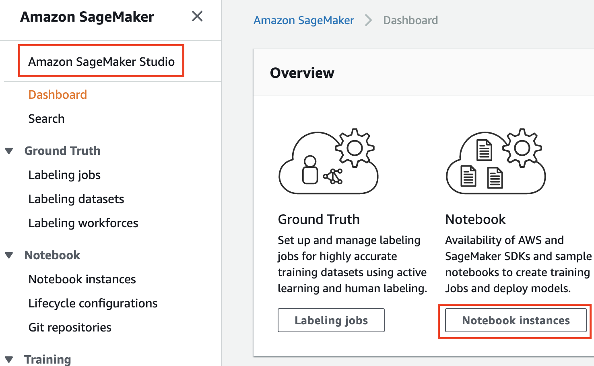
Start by loading the AutoPilot example on SageMaker
Load Example on Sagemaker Studio
-
Navigate to the Commands tab - 4th icon on the left ( ) and click “Getting Started”. 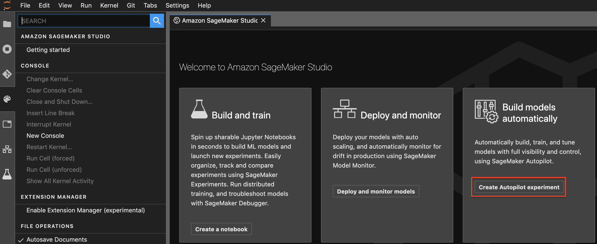
-
Then click “Create Autopilot Experiment” - you will see the following window:

-
For
Experiment name, enter : Sagemaker-test-autopilot” or something similar -
For
S3 location of input data, enter : https://sagemaker-getting-started-data.s3.us-east-2.amazonaws.com/bank-additional-full.csv -
For
Target attribute name, enter : y -
And for
S3 location of output data, enter an s3 location within your account. To create an S3 bucket within your account, use this link. Note : please useus-east-2for “region” in step 4 of this guide. If you have an existing bucket inus-east-2that you would like to use, feel free to do so!
Load Example on Sagemaker Notebook Instance
- Once you open Jupyter on your SageMaker notebook instance, you can navigate to the “SageMaker examples” tab

- Expand the title “Autopilot” by clicking it, and then click “Use”

- This will open the Autopilot example:

- Make sure you change your Kernel to “Conda Python 3” if it isn’t already set to that.

Run the AutoPilot example on SageMaker
A typical introductory task in machine learning (the “Hello World” equivalent) is one that uses a dataset to predict whether a customer will enroll for a term deposit at a bank, after one or more phone calls. For more information about the task and the dataset used, see Bank Marketing Data Set.
Direct marketing, through mail, email, phone, etc., is a common tactic to acquire customers. Because resources and a customer’s attention are limited, the goal is to only target the subset of prospects who are likely to engage with a specific offer. Predicting those potential customers based on readily available information like demographics, past interactions, and environmental factors is a common machine learning problem. You can imagine that this task would readily translate to marketing lead prioritization in your own organization.
This example demonstrates how you can use Autopilot on this dataset to get the most accurate ML pipeline through exploring a number of potential options, or “candidates”. Each candidate generated by Autopilot consists of two steps. The first step performs automated feature engineering on the dataset and the second step trains and tunes an algorithm to produce a model. When you deploy this model, it follows similar steps. Feature engineering followed by inference, to decide whether the lead is worth pursuing or not. The notebook contains instructions on how to train the model as well as to deploy the model to perform batch predictions on a set of leads. Where it is possible, use the Amazon SageMaker Python SDK, a high level SDK, to simplify the way you interact with Amazon SageMaker. Let’s explore two ways to run this example:
Run Example on Sagemaker Studio
-
Clicking “Create Experiment” in the previous step will open the following tab

-
Track the progress of your experiment using the progress bar shown below. In this case, SageMaker Autopilot is done with “Analyzing data” and the “Feature Engineering” steps and is currently running “Model tuning” 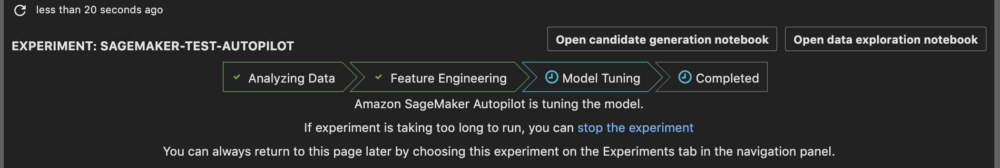
-
The trials tab helps you keep track of training jobs that are completed, in progress and the training job that is the best so far: 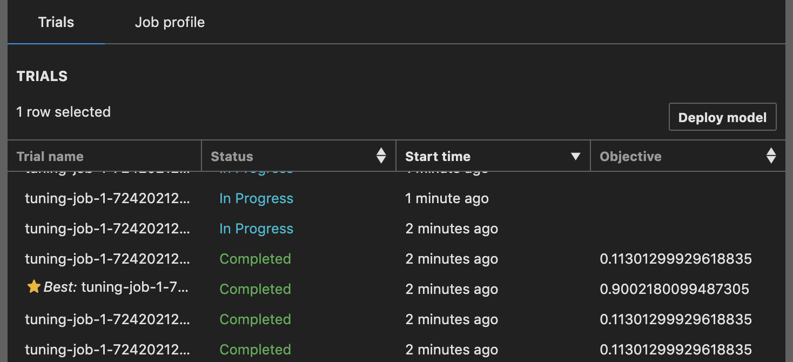
-
To get more details about a particular trial, you can right click on any trial and click “Open in Trial details”

-
Click on “Objective” to sort the trial rows by objective - this will put the best trial on the top

-
Right-click on the best trial and click “Open in Trial component list”. Highlight the first 15 rows by holding down ctrl and click through, or by clicking the first row, and clicking on the 15th row while holding down shift. Then click “Add chart”

-
Scroll down and click the “New Chart” area 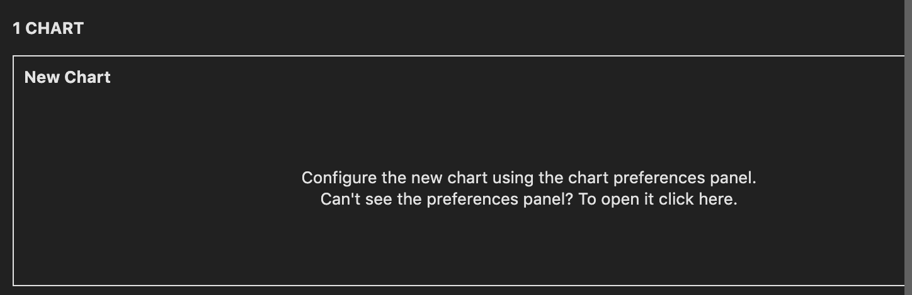
-
Under Chart Properties in the right side-bar, select Data type : “Summary Statistics”, Chart type : “Histogram” and use the drop-down under X-axis to select validation:accuracy_avg 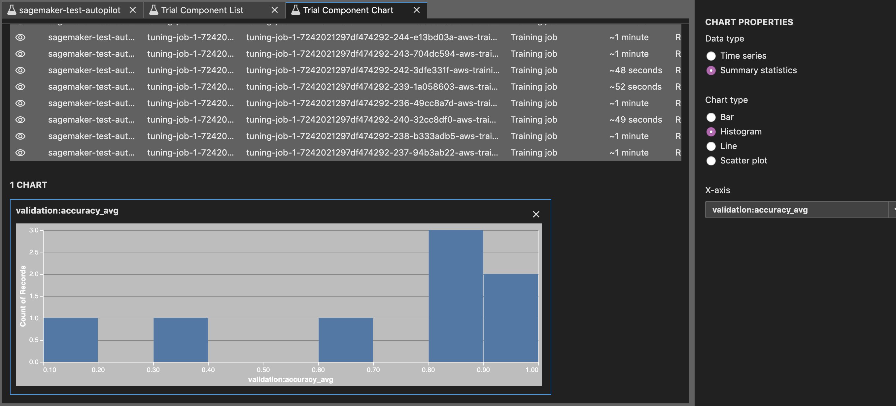 Feel free to explore other charts!
-
In the Trial components list, click any trial followed by “Deploy model”. Add an endpoint name, and any other optional parameters and click the [Deploy model] button! 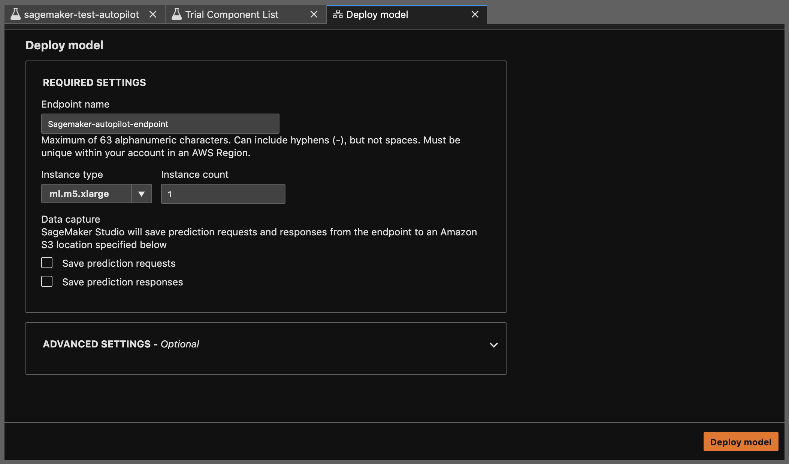
-
(Optional) Enable model monitoring and run through the notebook that opens up. Read more about model monitoring here 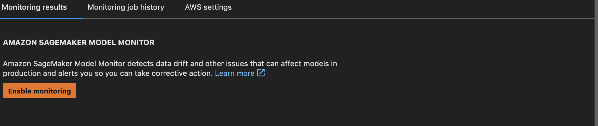
Run Example on Sagemaker Notebook Instance
-
To run cells in your notebook, click a cell followed by the [ Run] button on the top toolbar. You can also click a cell and hit shift+enter
-
Start by running the cells that import necessary packages like sagemaker (python SDK), and set parameters such as region, bucket, prefix and role for later use. Then run the cell the downloads the data. 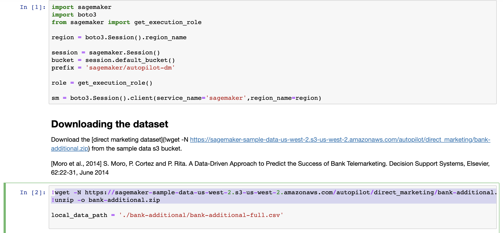
-
Read data using padas read_csv

-
Split the data into a train set and a test dataset 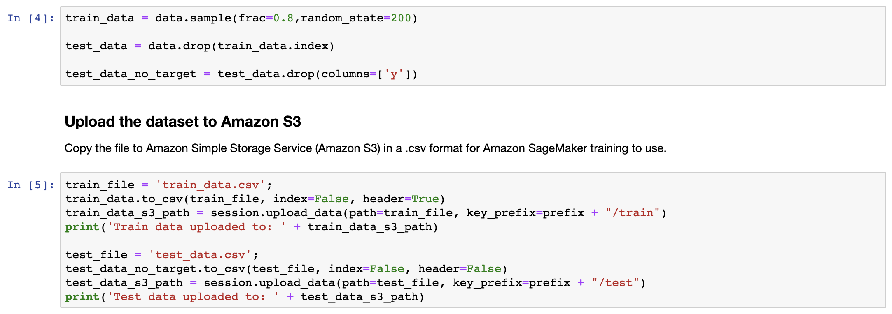
-
Run the next cell to set up and launch the autopilot job 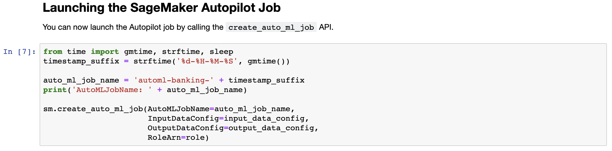
-
Run and track the status of the job: 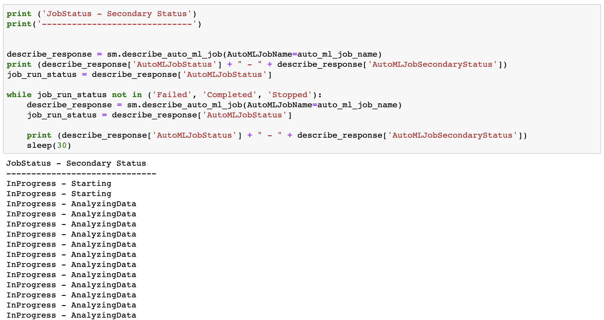
-
Run the rest of the notebook to get the best candidate job, and to view the “Candidate generation” and “Data exploration” notebooks that were generated by SageMaker Autopilot.
Please read through and complete each activity before starting the next.
Please follow the steps below to shutdown or delete resources so you will not be charged.
-
Delete the S3 bucket by selecting the bucket then clicking Delete from above the list of buckets.
-
Delete any notebook instances you may have created.